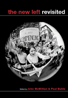

You didn't have to be there
You didn't have to be there


 You didn't have to be there
You didn't have to be there

|  |
The New Left Revisitededited by John McMillian and Paul Buhlepaper EAN: 978-1-56639-976-0 (ISBN: 1-56639-976-9) |
Outstanding Academic Title, Choice, 2003
"This excellent collection of essays on the New Left helps mark the coming of age of a rising generation of scholars, too young to have experienced the 1960s but committed to bringing new scholarly questions to the study of the decade."
—Alan Brinkley, Columbia University, and author of Liberalism and Its Discontents
Starting with the premise that it is possible to say something significantly new about the 1960s and the New Left, the contributors to this volume trace the social roots, the various paths, and the legacies of the movement that set out to change America. As members of a younger generation of scholars, none of them (apart from Paul Buhle) has first-hand knowledge of the era. Their perspective as non-participants enables them to offer fresh interpretations of the regional and ideological differences that have been obscured in the standard histories and memoirs of the period. Reflecting the diversity of goals, the clashes of opinions, and the tumult of the time, these essays will engage seasoned scholars as well as students of the '60s.
Excerpt available at www.temple.edu/tempress
"From 'Was the New Left new?' to 'Did the New Left die and if so, why?' to 'What was the role of women in the draft resistance movement?' with a dozen case studies by a new generation of leftist scholars, this amazing collection asks new questions and sparkles with new insights and brilliance on every page."
—Roxanne Dunbar-Ortiz, Professor in Ethnic Studies and Women's Studies, California State University
"You'll be amazed at how much you think you know about the Sixties is wrong—especially if you've read the standard works on the subject. This is an agenda-setting anthology, adventurous and rigorous in equal measure."
—Rick Perlstein, author of Before the Storm: Barry Goldwater and the Unmaking of the American Consensus
"This impressive collection of essays re-examining the "New Left" movements of the 1960s is written by a new generation of scholars detached from the events they are recounting. ...This welcome collection challenges the pessimism of former radicals and exposes the opportunism of "the second God that failed," ex-activists turned conservatives. ... An outstanding collection. Summing Up: Essential."
—Choice
"Well, this is an interesting book for us old fogies who work on the social movements of the 1960s! ...the book as a whole is provocative and fascinating, reshaping our understanding of the new left, democratizing it, perhaps."
—The American Journal of Sociology
"New Left Revisited succeeds admirably...the volume as a whole is a rich repast, for professional historians and lay readers alike."
—Labor/Le Travail
"Is there anything left to be said about the New Left? The answer is a resounding yes.... John McMillian's useful introduction and Paul Buhle's inspired concluding ruminations provide bookends for twelve original and insightful essays.... Consonant with the best impulses of social history, The New Left Revisited offers detailed, textured, and nuanced accounts of New Left radicalism..."
—New England Quarterly
"Taken together [these essays] create a picture of the New Left as a complex dynamic movement where the socialization of the existing society was challenged by new ideas of what was possible.... an enjoyable, thought-provoking read."
—Socialism and Democracy Online
"...an exciting anthology..."
—The Journal of American History
Introduction – John McMillian
Part I: Local Studies, Local Stories
1. "It Seemed Like a Very Local Affair": The 1960s Student Movement at Southern Illinois University at Carbondale – Robbie Lieberman and David Cochran
2. Between Despair and Hope: Studies on the Left and the Historical Legacy of the New Left – Kevin Mattson
3. Building the New South: The Southern Student Organizing Committee – Gregg Michel
4. The Black Freedom Struggle and White Resistance: A Case Study of the Civil Rights Movement in
Cambridge, Maryland – Peter Levy
5. Organizing from the Bottom Up: Lillian Craig, Dovie Thurman, and the New Left in the 1960s – Jennifer Frost
6. Death City Radicals: The Counterculture in the New Left in 1960s Los Angeles – David McBride
Part II: Reconsiderations
7. How New Was the New Left?: Re-Thinking New Left Exceptionalism – Andrew Hunt
8. Strategy and Democracy in the New Left – Francesca Polletta
9. The "Point of Ultimate Indignity" or a "Beloved Community"?: The Draft Resistance Movement and New Left Gender Dynamics – Michael S. Foley
10. Losing Our Kids: Queer Perspectives on the Chicago Seven Conspiracy Trial – Ian Lekus
11. Between Revolution 9 and Thesis 11: Or, Will We Learn (Again) to Start Worrying and Change the World? – Jeremy Varon
12. Letting Go: Revisiting the New Left's Demise – Doug Rossinow
Afterword – Paul Buhle
About the Contributors
John McMillian teaches History and Literature at Harvard University and is co-editor with Timothy Patrick McCarthy, of The Radical Reader: A Documentary Anthology of American Radical History (forthcoming).
Paul Buhle is Lecturer in the American civilization department at Brown University. His most recent book (co-authored with Dave Wagner) is Radical Hollywood: The Untold Story Behind America's Favorite Movies. He writes for The Nation, The Guardian, and The Times Higher Education Supplement, among other publications. He is also editor of History and the New Left: Madison, Wisconsin, 1950-1970 (Temple).
Contributors: David Cochran, Michael S. Foley, Jennifer Frost, Andrew Hunt, Ian Lekus, Peter Levy, Robbie Lieberman, Kevin Mattson, David McBride, Gregg Michel, Francesca Polletta, Doug Rossinow, Jeremy Varon, and the editors.
American Studies
History
Sociology
Critical Perspectives on the Past, edited by Susan Porter Benson, Stephen Brier, and Roy Rosenzweig.
Critical Perspectives on the Past, edited by Susan Porter Benson, Stephen Brier, and Roy Rosenzweig, is concerned with the traditional and nontraditional ways in which historical ideas are formed. In its attentiveness to issues of race, class, and gender and to the role of human agency in shaping events, the series is as critical of traditional historical method as content. Emphasizing that history is itself an interpretation of material events, the series demonstrates that the historian's choices of subject, narrative technique, and documentation are politically as well as intellectually constructed.
© 2015 Temple University. All Rights Reserved. This page: http://www.temple.edu/tempress/titles/1642_reg.html.